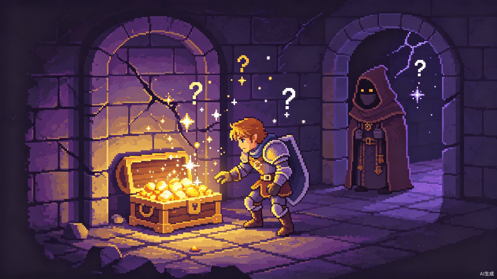
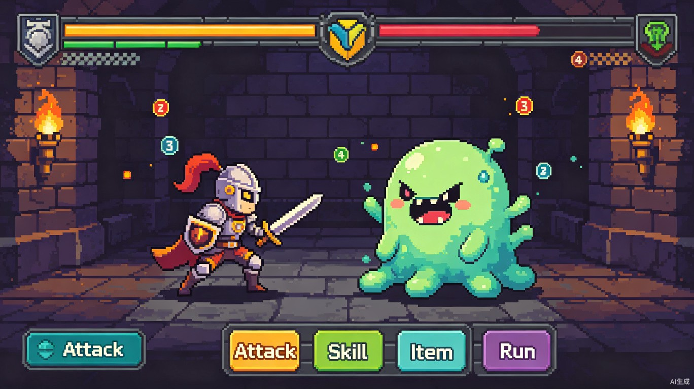
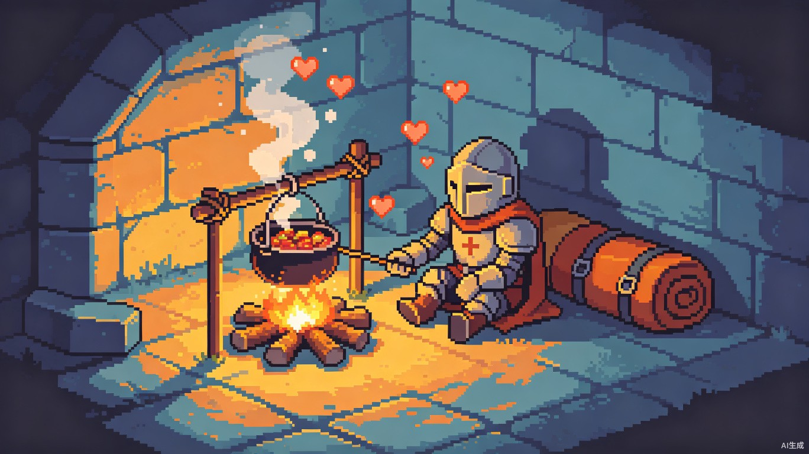

「任务栏勇者」是一款运行在 Windows 11 桌面任务栏上的微型 RPG 游戏。 它将经典的地下城探险玩法与桌面环境深度融合，玩家无需打开独立窗口， 只需偶尔瞥一眼任务栏角落，就能指挥自己的英雄在无尽地城中战斗、探索和成长。
我们想解决的问题很简单：现代人长时间面对电脑工作，需要一种 不打断工作流、随时可瞥一眼 的轻度娱乐方式。传统游戏需要全屏或切换窗口，而任务栏勇者就在你眼前， 像系统托盘图标一样安静存在，却在不经意间积累冒险的惊喜。

四大核心场景循环往复，每一次瞥向任务栏都可能遇到意想不到的事件。

英雄在地下城中定时遭遇怪物。采用经典回合制战斗，玩家可点击任务栏弹窗选择攻击、技能、道具或逃跑。战斗自动进行，结果实时推送通知。
发现神秘宝箱、遇见流浪商人、触发隐藏机关、解读古老石碑。每次奇遇提供多种选择分支，不同决策导向不同奖励或风险。

收集地城食材，在篝火旁烹饪料理。不同配方提供临时属性加成或持续恢复效果。料理可以储存，在战斗前策略性使用。
发现地城中的安全营地，英雄自动进入休息状态恢复生命值和法力值。休息时间与现实时间挂钩，离开电脑越久恢复越多。
游戏采用程序生成的无限地下城结构，层数无上限，难度动态调整。每次探险都是独一无二的旅程。
新手适应区，低强度史莱姆和哥布林。玩家熟悉战斗和交互操作，收集基础装备和食材。
环境机制层，需要火把照亮，可能遭遇水栖怪物。引入氧气/照明资源管理，奇遇事件密度提升。
高难度精英层，BOSS 战出现。解锁附魔和符文系统。休息营地变得稀少，决策风险显著提升。
真正的无限模式。每 10 层一个主题区域（熔岩、冰窟、虚空），怪物组合和事件池持续扩展。全球排行榜记录最深到达层数。
基于 Windows 11 原生 API 构建，轻量高效，系统资源占用极低。
任务栏托盘整
合与通知推送
弹窗交互界面
与像素渲染
本地存档与
地城数据存储
程序生成算法
构建无限地城
Windows 11 桌面应用程序（.exe 安装包），以后台服务模式运行，任务栏常驻托盘图标。点击图标弹出游戏主界面窗口，所有交互事件以系统通知（Toast Notification）形式推送。支持自动更新和云存档同步（可选）。